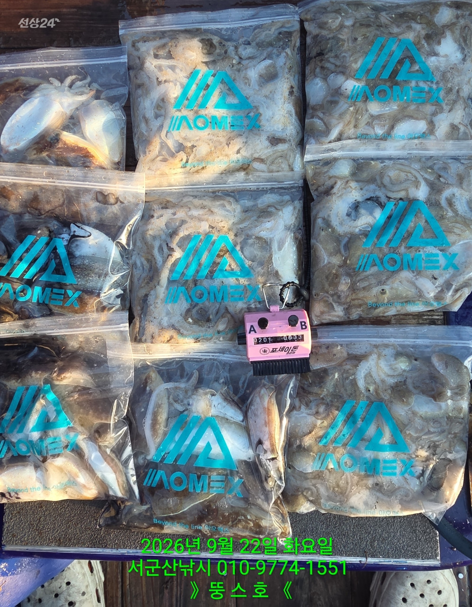
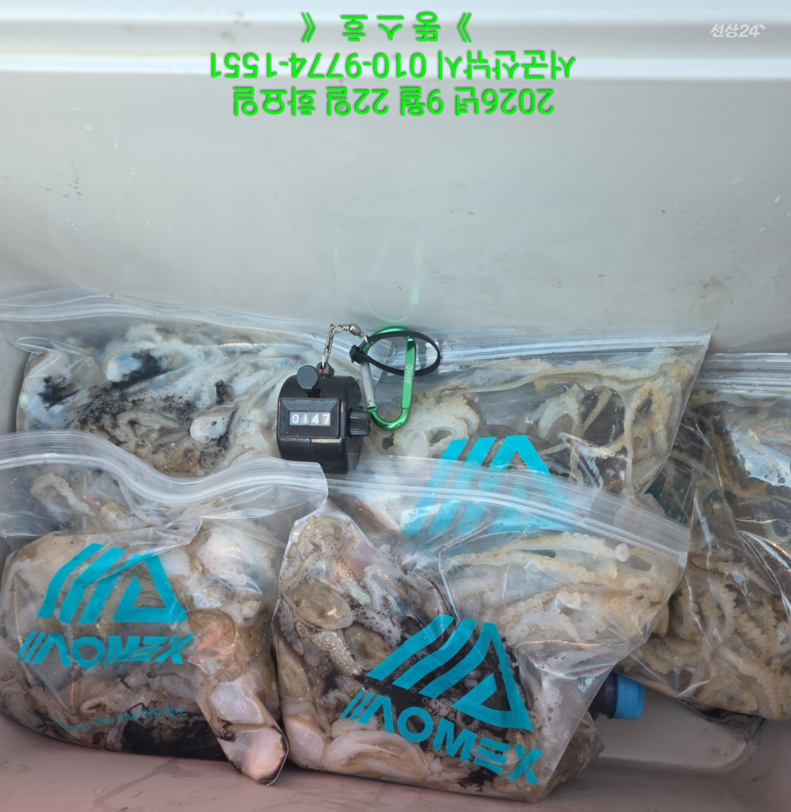
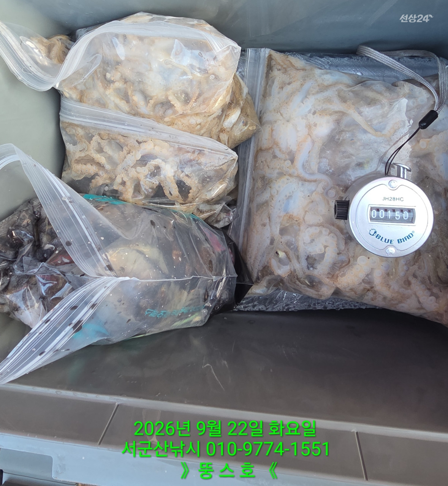
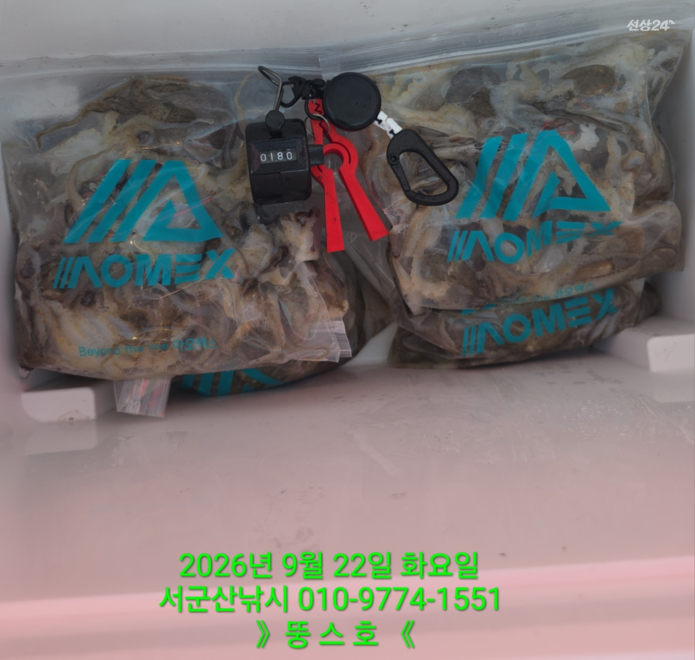

2026-09-22 · 군산 뚱스호
조황정보 HOME / 조황정보 / 조황상세
9/22 [군산 뚱스호]_쭈꾸미 종일반 조황_오늘 고생 많으셨습니다! 9/22 [군산 뚱스호]_쭈꾸미 종일반 조황_오늘 고생 많으셨습니다! 안녕하십니까..9월 22일 쭈꾸미종일반 조황입니다오늘은 바람이 말썽이네요오전에 북동,들물..왼쪽 선진입오후에 북서,썰물..왼쪽 또선진입썰물 제대로가면서 활성도 좋아질때스팡카 내리고 배돌려 오른쪽 선진입 시켜드리면서 사드락사드락잡고 왔습니다오늘오신 조사님들 고생 많으셨습니다 ■ 예약문의 : 063-466-6565 010-9774-1551■ 오시는길 : 전라북도 군산시 새만금북로277(오식도동 1002)■ 서군산낚시 실시간 예약 바로가기 : http://seo.sunsang24.com/■ 서군산낚시 밴드 바로가기 : https://band.us/band/78646704 서군산낚시 (서해안/비응항) 1.7km 주꾸미 2026. 9. 22 | 조회 349 서군산낚시 (서해안/비응항) 2026. 9. 22 | 조회 349



